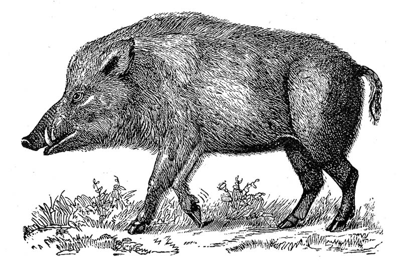

Thursday, August the 12th, 2010
back to: title, date or indexes
The stuff of nightmares… or at least of a gleefully low-budget horror film. One would think so from the exciting headline ‘Radioactive boars' on loose in Germany (pity about those quotation marks) which suggests packs of demented glow-in-the-dark beasts rampaging through the Teutonic forests, attacking woodcutters and orphans roaming lost in the woods. Alas, the boars feed on mushrooms, truffles and wild berries rather than human flesh.

Wild boar (non-radioactive version)